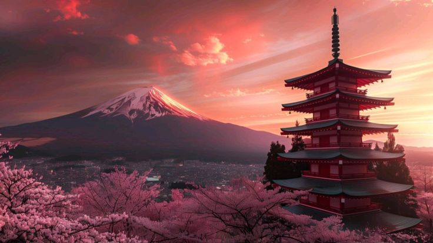
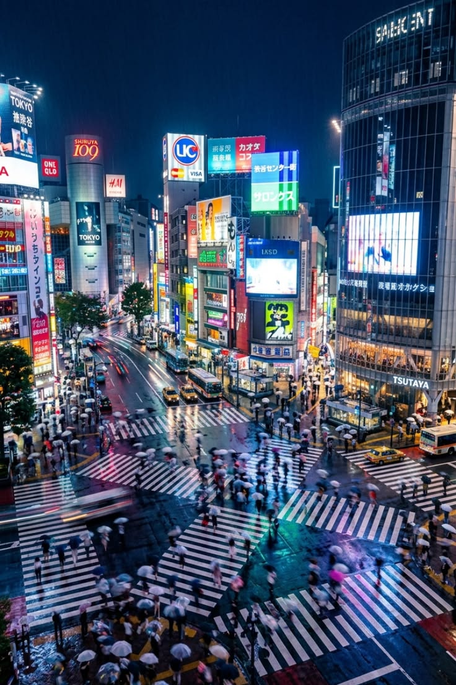
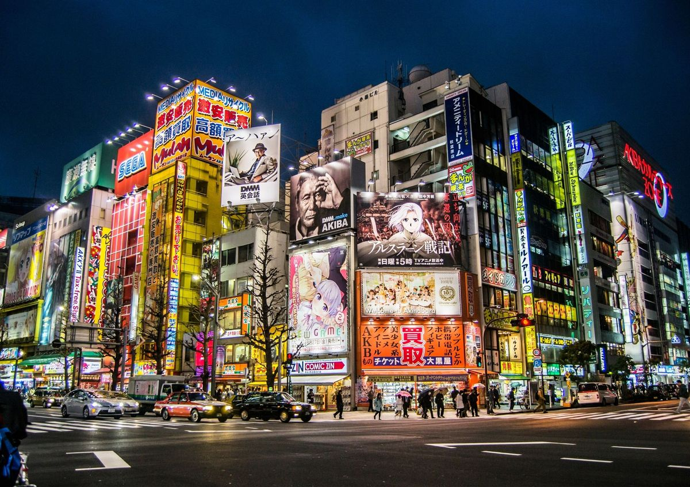
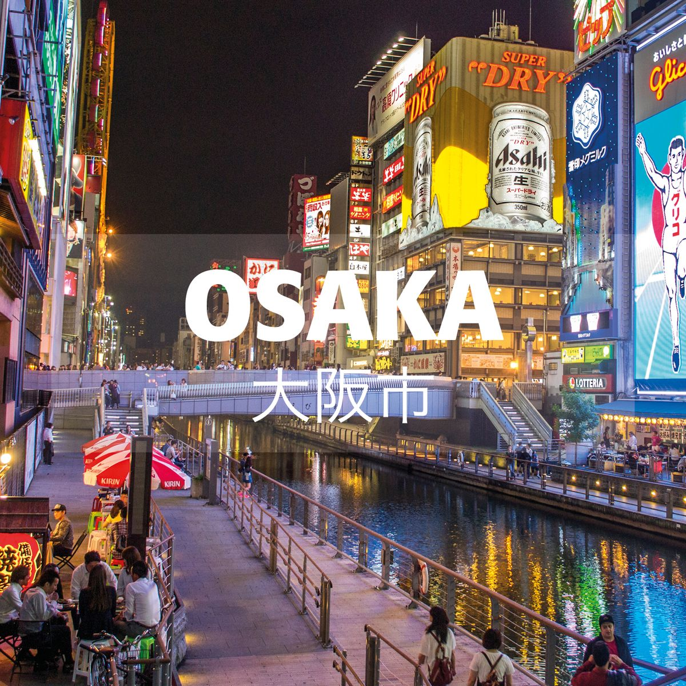

You've definetly heard about Tokyo but let me stop here why did japan became the center of the world and evrey body is targeting it as a traveling destination?
in addition to that japan is the god country of animy and manga and evrey body is targeting it as a traveling destination including me ive never been there however it is my next traveling destination and i will be there in 2027 and i will be sharing my experiance with you guys so stay tuned for that.
Lets think of what u really need to know about tokyo before u go there and what are the best places to visit in tokyo including hotels,cities,restaurants and many more.
Best places in tokoyo
🌸Ueno Park

It is one of the best places that contais a lot of sakura viewing places.
🏯Senso-ji Temple
Sensō-ji is the oldest temple in Tokyo. It was built more than 1,000 years ago and attracts millions of visitors every year.
🌃 Shibuya Crossing

Shibuya Crossing is one of the busiest pedestrian crossings in the world, with thousands of people crossing at once.
🗼 Tokyo Skytree
Tokyo Skytree is the tallest tower in Japan. Visitors can go to the observation deck and see all of Tokyo.
🎌 Akihabara

Akihabara is known as the anime and manga capital of the world. Fans come from all over the world to buy anime figures, manga, games and collectibles
🍜 Osaka (Food Capital of Japan)

Osaka is often called "Japan's Kitchen" because of its amazing food culture
why it's famous
Street food
Friendly atmosphere
Bright nightlife district called Dotonbori
However have you ever heard about the dark side of tokyo?
One of the most scariest thing that happen in toky is the story of Lucian Blackman case wich is well-known stories
involving a young female foreign visistoer to japan.
It also connects directly to tourism and Tokyo's nightlife.
For more information you can click on the link below